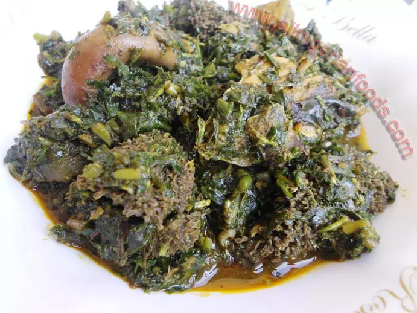

Afang Soup
--> Return to Home

Description
This delicious soup is native to the Efiks, the major occupant of Cross River. It is a rich with ingredients and very tasty.
Ingredients
- 15 cups of sliced fresh waterleaf
- 1/2 cup of ground crayfish
- 3 cups of ground fresh ukazi leaves
- 3 cubes of knorr
- 1 stockfish head
- 1.5 cups of palm oil
- Salt and pepper to taste
- 2 medium-sized dried/roasted fish
- 6 red fresh pepper
- 2 kg assorted meat
Steps
- Grind the ukazi leaves
- Season the meat with 1/2 cup of sliced onions, salt, 2 seasoning cubes, and any other spice of choice
- Slice the waterleaves and set aside in a sieve so excess water drains away
- Wash the stockfish, dried fish, and add them to the cooking meat. Let them cook until soft and the pot is almost dry
- Add the palm oil, crayfish, and stir together
- Add one seasoning cube, ground pepper, and salt to taste. Allow cooking for 3-5 minutes
- Add the waterleaves; allow to simmer for 6 minutes while you stir continuosly
- Add the ground ukazi leaves. Stir all together, cover the pot and allow another 5 minutes stirring every 2 minutes
That's it! You've cooked a delicious afang soup.
--> Return to Home